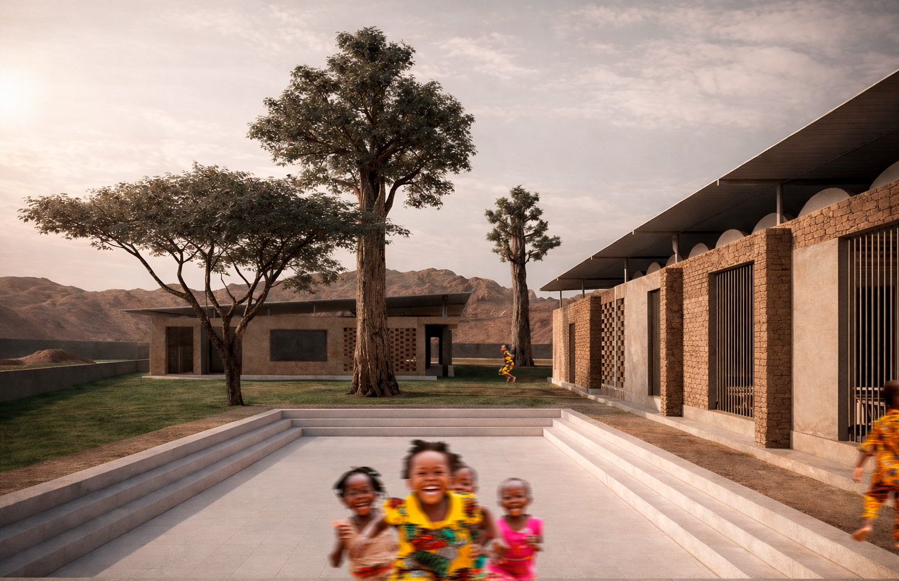
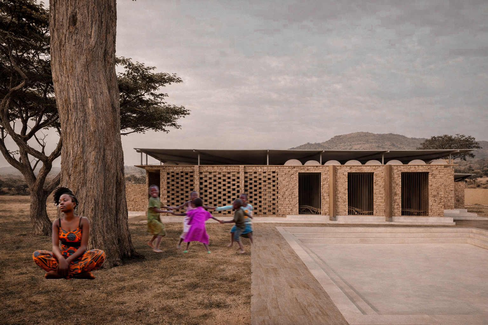
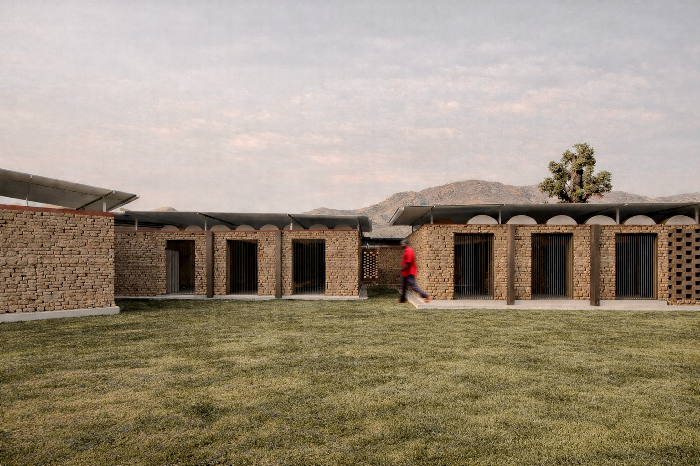
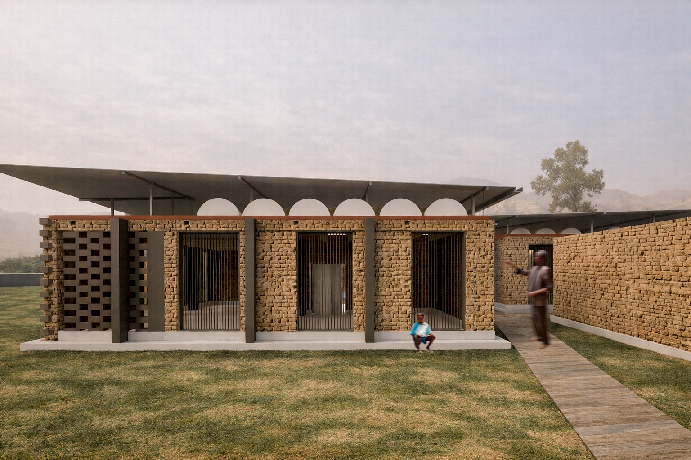

Una arquitectura arraigada a su territorio, construida desde la relación entre comunidad, clima, materialidad y paisaje. An architecture rooted in its territory, shaped by the relationship between community, climate, materiality and landscape.

La Escuela Rural en Senegal nace desde la búsqueda de una arquitectura capaz de responder a su entorno sin imponerse sobre él.
El proyecto se plantea en un contexto rural de África Occidental, donde el paisaje, el clima y las formas tradicionales de construcción se convierten en parte fundamental de la propuesta.
La implantación se organiza a partir de una serie de volúmenes bajos que construyen espacios intermedios, patios y recorridos protegidos. La arquitectura no se entiende únicamente como un edificio, sino como un pequeño paisaje habitable donde el aprendizaje, el encuentro y la vida cotidiana pueden desarrollarse en relación directa con el exterior.
La presencia de la vegetación, el horizonte montañoso y la escala de los espacios buscan generar una escuela abierta, cercana y reconocible para su comunidad.
The Rural School in Senegal emerges from the search for an architecture capable of responding to its environment without imposing itself upon it.
The project is conceived within a rural context in West Africa, where landscape, climate and traditional construction become fundamental elements of the proposal.
The layout is organized through a series of low volumes that create intermediate spaces, courtyards and protected circulation paths. Architecture is understood not only as a building, but as a small inhabitable landscape where learning, gathering and everyday life can unfold in direct relationship with the outdoors.
Vegetation, the mountainous horizon and the human scale of the spaces seek to create a school that feels open, familiar and connected to its community.
La materialidad parte de lo esencial.
Los muros de tierra constituyen el elemento predominante de la arquitectura. Su textura, color y comportamiento térmico permiten que el edificio dialogue directamente con el paisaje, mientras que su carácter artesanal aporta una identidad propia a cada espacio.
Sobre estos volúmenes se desarrolla una estructura ligera de cubierta metálica, independiente de los muros principales y extendida más allá de ellos para generar sombra y protección frente a las condiciones climáticas.
Los elementos de hormigón aparecen de manera puntual en basamentos, circulaciones y espacios de transición, estableciendo una relación entre la robustez de la tierra y la ligereza de la cubierta.
Celosías, bloques perforados y cerramientos verticales permiten controlar la entrada de luz y ventilación, creando una arquitectura que filtra el exterior en lugar de cerrarse completamente ante él.
Materiality begins with the essential.
Earth walls form the predominant architectural element. Their texture, color and thermal properties allow the building to establish a direct dialogue with the landscape, while their handcrafted character gives each space its own identity.
Above these volumes, a lightweight metal roof structure extends beyond the walls to create shade and protection from climatic conditions.
Concrete elements appear selectively in bases, circulation areas and transitional spaces, establishing a relationship between the solidity of earth and the lightness of the roof.
Screens, perforated blocks and vertical enclosures control light and ventilation, creating an architecture that filters the outside rather than completely closing itself off from it.
Una secuencia de patios, aulas y recorridos donde la arquitectura se encuentra constantemente con el paisaje. A sequence of courtyards, classrooms and circulation spaces where architecture constantly meets the landscape.


